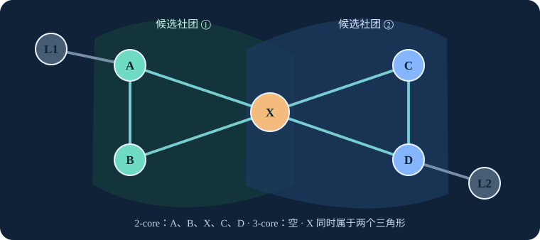

COMMUNITIES / FLOW · OVERLAP · K-CORE
第11章 社团检测（下）
同一张图，为什么会有不止一种正确的群体结构？
一个人同时属于两个群体，应该被分到哪一边？
假设 X 与 A、B 共同研究一个项目，又与 C、D 同属另一个兴趣小组。两个小组各自紧密互连，但它们共享成员 X。若强行把所有节点划成互不重叠的两组，X 只能归入其中一组，另一层关系就消失了。传统模块度最大化往往输出一个硬分区；但硬分区不是“社团”的唯一数学定义。

我们从一张七节点、八边的无向简单图开始：左三角形 A—B—X—A，右三角形 X—C—D—X，另有 A—L1 和 D—L2。后面的交互与代码都严格使用这张图，不把演示结果冒充为真实社交数据。
三个不同的问题，不应由同一个算法代答
- 最优分区是什么？模块度优化（例如 Louvain）偏好比随机度数基线更紧密的节点分组，通常输出每个节点恰属一组的划分。
- 信息流在哪里停留？Infomap 利用随机游走的访问与跨模块流动，寻找让游走轨迹的编码描述更短的分区。
- 哪些成员可以跨组？重叠社团可以允许一个顶点同时拥有多个群体身份；边社团则先把边分组，再让节点因其关联多组边而参与多个社团。
同一张图按“社区密度”“流停留时间”“成员角色”解释，可能形成不同的有效结果。这是目标定义不同，不一定意味着某个算法出错。
Infomap：压缩随机游走而不是重新命名模块度
考虑一位随机浏览者沿网络的边移动。若它在某一子图内部停留很久，频繁出现的是该子图内的节点，跨组跳转相对较少。可以给组内节点使用较短的本地编码，在跨组时额外声明模块编号。Rosvall 与 Bergstrom 的 map equation 把这一思想写为两级编码长度：
其中 q 是模块间退出码本的使用率，H(Q) 是模块间编码熵；pᵢ↻ 是第 i 个模块的局部码本使用率，H(Pᵢ) 是其中包含节点访问与退出事件的概率分布的熵。目标是最小化 L(M)，不是最大化 Q。具体随机游走的方向、权重、停留和跳转处理都会改变结果，不能凭示意图捏造“最优分区”。
重叠社团：共享节点与边社团
在图中，集合 {A,B,X} 与 {X,C,D} 共享一个节点 X。它们是我们根据三角结构手工定义的两个候选群体，并不是声称任何特定软件必定返回这两个结果。Ahn、Bagrow 与 Lehmann 提出的边社团框架，通过相近边的聚类间接产生重叠节点成员关系。
| 表达方式 | 节点 X | 能回答的问题 | 局限 |
|---|---|---|---|
| 不重叠节点分区 | 恰属于一组 | 全图怎样分为互斥群体 | 掩盖跨组身份 |
| 重叠节点成员关系 | 属于两个群体 | 哪些人跨越群体边界 | 需指定重叠定义与评价方法 |
| 边社团 | 因关联两组边而跨组 | 关系本身可能有什么角色 | 大量边会增加计算与解释成本 |
k-core：它不是另一种社团划分
k-core 是每个保留节点在该诱导子图中度数至少为 k 的最大子图。算法不断剥离当前度数不足 k 的顶点，并重新计算邻居在剩余子图里的度数，直到不再变化。一个 k-core 可以有多个连通分量；它描述的是最小连接支撑层次，不保证社团边界或高聚类。
图中两片叶子 L1、L2 度数为 1，首先会在 2-core 的剥离中消失。余下两个三角形共享 X，A、B、C、D 的剩余度数为 2，X 为 4。因此 2-core 是 {A,B,X,C,D}；但 3-core 最终为空，因为四个外围三角顶点先被移除，X 随后也失去全部邻居。
逐层剥离这张七节点图
1-core 保留 7 个节点：A、B、X、C、D、L1、L2。
注意 X 在原图的度数是 4，却不属于 3-core：core number 并不等于原始节点度数。如果只看一轮度数过滤而没有迭代剥离，会得到错误答案。
代码：用独立算法对照 NetworkX 的 k-core
依赖 Python 3.11+、NetworkX 3.3+。代码先手写剥离规则，再和 nx.k_core 的结果比较，因此不仅是复述接口的输出。
import networkx as nx
edges = [("A","B"), ("A","X"), ("B","X"),
("X","C"), ("X","D"), ("C","D"),
("A","L1"), ("D","L2")]
graph = nx.Graph(edges)
def peel(g, k):
nodes = set(g)
while True:
remove = {v for v in nodes if len(set(g.neighbors(v)) & nodes) < k}
if not remove:
return nodes
nodes -= remove
assert graph.number_of_nodes() == 7
assert graph.number_of_edges() == 8
expected = {1: set(graph), 2: {"A","B","X","C","D"}, 3: set()}
for k, nodes in expected.items():
assert peel(graph, k) == nodes
assert set(nx.k_core(graph, k=k)) == nodes
assert {"A","B","X"} & {"X","C","D"} == {"X"}
print("core numbers:", nx.core_number(graph))若要实际运行 Infomap，应独立记录工具版本、输入图方向和边权、随机种子、编码方案、返回分区及编码长度；上面这个代码没有计算 Infomap 或重叠社团的全局最优解。
方法选择与适用边界
Infomap 为信息流结构建模，k-core 为局部最小度约束建模，重叠社团为多重成员身份建模。它们解决的不是同一优化问题。稀疏噪声边、方向、时间变化、节点属性和随机种子都会影响实际群体结论；任何群体解释都需要结合领域背景进行独立验证。
原始论文与软件定义
- Rosvall & Bergstrom (2008), Maps of random walks on complex networks reveal community structure, PNAS 105:1118–1123，map equation。
- Ahn, Bagrow & Lehmann (2010), Link communities reveal multiscale complexity in networks, Nature 466:761–764。
- Seidman (1983), Network structure and minimum degree, Social Networks。
- NetworkX k_core 参考：无自环、无多重边约定。
从此可见：寻找“群体”前要先说清群体的数学含义。下一章讨论另一种需要先说清机制的问题：疾病或状态如何沿网络传播。